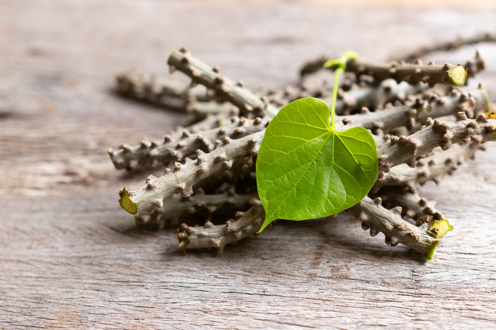

บอระเพ็ด
ไม้เถา ลำต้นเนื้ออ่อน เลื้อยพาดพันไปตามต้นไม้อื่น ลักษณะเถากลมโตขนาดนิ้วมือ มีไส้เป็นเส้นยาว มีเปลือกหุ้มเถาเป็นตุ่มเล็กๆ กลมๆ ตลอดเถาสีเทาอมดำ เปลือกสามารถลอกออกได้ ยางมีรสขมจัด
ใบ เป็นใบเดี่ยว ลักษณะใบรูปไข่หรือรูปสี่เหลี่ยมข้าวหลามตัด ขอบใบเรียบ ปลายใบแหลมมีลักษณะคล้ายใบพลู หรือใบโพธิ์ หรือบอระเพ็ดพุงช้างโตขนาดเท่าฝ่ามือ โคนเว้าเป็นใบรูปหัวใจ เส้นแขนงใบมองเห็นชัดเจน แผ่นใบสีเขียว
ดอก ออกเป็นช่อขนาดเล็กมาก ตามซอกใบ สีเขียวอมเหลือง ดอกแยกเพศอยู่คนละช่อ
ผล ลักษณะรูปทรงค่อนข้างกลม สีเหลืองหรือสีแดง
เตรียมถุงเพาะชำ ตัดเถาเป็นท่อน ๆ ยาวประมาณ 7 – 8 นิ้ว ปักลงในถุงเพาะชำ แล้วรดน้ำให้ชุ่มชื้นอยู่เสมอ รอประมาณ 2 – 3 สัปดาห์ บอระเพ็ดจะเริ่มแตกยอดอ่อนออกมาเป็นต้นกล้า
เมื่อต้นกล้าบอระเพ็ด อายุ 4 – 6 เดือน เอาลงปลูกในหลุมที่เตรียมไว้กลบดิน และ รดน้ำให้ชุ่มชื้นอยู่เสมอ
การให้ปุ๋ย ให้ครั้งแรก อายุ 4 – 6 เดือน เมื่อย้ายต้นกล้าบอระเพ็ดลงหลุม เมื่ออายุ 6 เดือนขึ้นไป ลดการให้ปุ๋ย เหลือปีละ 1 – 2 ครั้ง
การให้น้ำ บอระเพ็ดเป็นพืชทนแล้งได้ดี รดน้ำครั้งแรกที่ปลูกก็เพียงพอแล้ว หรือ ปล่อยตามธรรมชาติก็ได้
การกำจัดวัชพืช ควรทำพร้อมกับการพรวนดินและใส่ปุ๋ย
การป้องกันกำจัดโรคและแมลงศัตรู บอระเพ็ดไม่มีโรคและแมลงรบกวน จึงไม่ต้องใช้สารเคมีกำจัดโรคและแมลงแต่อย่างใด
เถาหรือลำต้น รสขมเย็น ต้มเคี่ยวกับน้ำใช้เป็นยาแก้ไข้ ขับเหงื่อ แก้กระหายน้ำ แก้ร้อนใน เป็นยาขมเจริญอาหาร เป็นยาอายุวัฒนะ บำรุงธาตุ บำรุงกำลัง
ใบ รสขมเมา เป็นยาขมเจริญอาหาร ช่วยขับน้ำย่อยในกระเพาะอาหาร รักษาโลหิตพิการ ช่วยระงับอาการสะอึก รักษาโรคพิษฝีดาษ ไข้พิษทุกชนิด เป็นยาบำรุงกำลัง บำรุงธาตุไฟ แก้โรคพยาธิ แก้รำมะนาด ปวดฟัน แก้ไข้ โรคผิวหนัง ทำให้ผิวพรรณผ่องใส รักษาโรคผิวหนัง
ผล รสขม เป็นยารักษาโรคไข้พิษอย่างแรง และเสมหะเป็นพิษ
ราก รสขมเย็น ดับพิษร้อน แก้ไข้ขึ้นสูงที่มีอาการเพ้อคลั่ง ถอนพิษไข้ ช่วยเจริญอาหาร
ทั้งห้า รสขม เป็นยาอายุวัฒนะ แก้ปวดเมื่อย ช่วยเจริญอาหาร รักษาริดสีดวงทวาร แก้ปวดฟัน แก้ร้อนใน รักษาโรคเบาหวาน แก้ดีพิการ แก้เสมหะ
เมื่อได้บอระเพ็ดแห้งมาแล้ว เก็บไว้ในกระสอบโปร่ง ๆ หรือ ถุงปุ๋ยสะอาด และ ควรเก็บไว้ในห้องที่มีอุณหภูมิปกติ